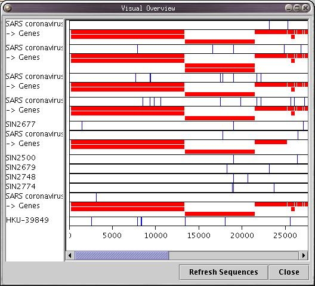

Back to Main
Back to Main
Base-By-Base provides a statistical report on all of the genes in one genome compared to those in another. To get
this report, mark two sequences (via the header list) and select the 'View CDS Statistics' entry in the Reports
menu. A message will prompt users to mark sequences if none are marked.
The report details a comparison of genes on the first genome with two properties of the second, genes and the
sequence along the same region as the genes of the first. Base-By-Base makes a mapping of counterpart genes on the
second genome by determining the greatest portion of overlap in the alignment. If the sequences are not propertly
aligned, the results of this mapping may not be accurate.
The following information is provided for each gene in the report:
|
|
The Event Breakdown report is structured as a hierarchical tree, and is designed for easy navigation of the genome to
find specific difference information for particularly interesting regions of a pair of genomes.
This report provides a breakdown of the differences between genes on one sequence and the corresponding regions in
another. The breakdown includes the number of and type of substitutions, the number of deletions, and the number and
type of amino acid changes. In addition to this, a breakdown of events occuring within the regions commented on by
users is also available. This compares comments on both sequences.

The Visual Overview Summary displays an overview of the differences between each sequence in the current alignment and the consnesus sequence of the alignment. It is designed to quickly show a colour coded overview of the full genome sequence alignment and allows you to quickly identify areas of interest on the genome to view in the main alignment window.
When edits are made to the sequences in the alignment, this window refreshes the consensus and displays the new comparison. Changes are polled about once per second, so edits will not show up instantly when they are made.
There are currently four colour schemes available in the visual summary overview. The 'Difference' colour scheme is identical to the 'Differences' row of the main display when in 'Against Consensus' comparison mode. Base changes (or regions of substitutions) are displayed as blue ticks, while insertions and deletions are displayed in green and red respectively. The 'Raw Conservation' colour scheme will colour regions of the genome based on how similar each character is to the consensus sequence. There are also 'Scored Similarity' colour schemes for both PAM250 and BLOSUM62 matrixes when comparing sequences of amino acids.
Note that the ordering of sequences in this window is NOT automatically updated when the ordering of sequences in the main window changes. If you would like to see an up to date view of the sequences in the main window, click the Refresh Sequences button and the display will update.
Back to Main